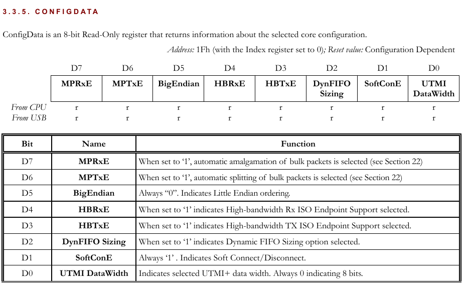
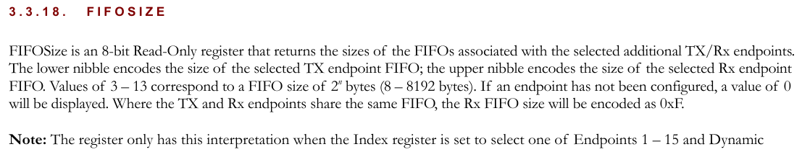
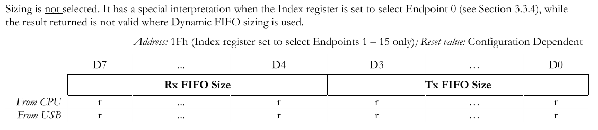
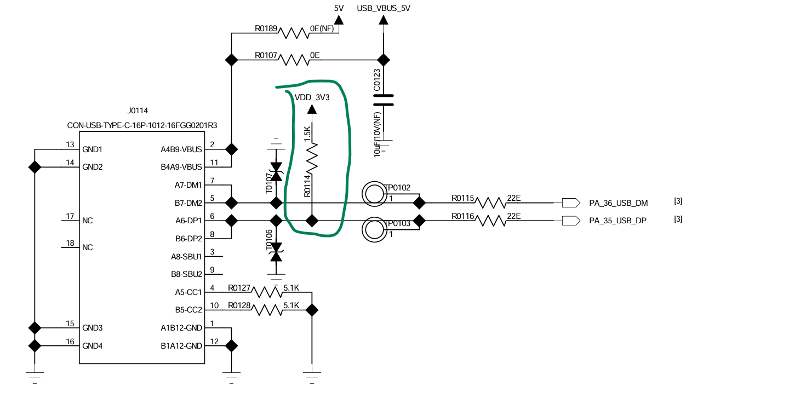
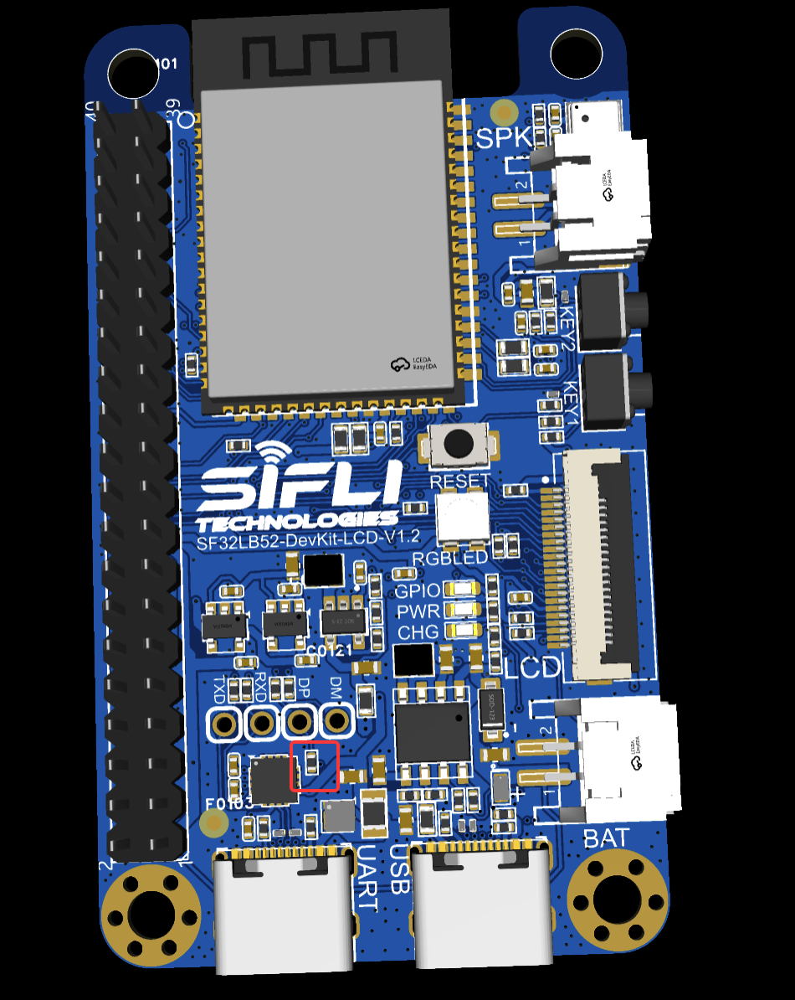

给sf32移植usb驱动的波折
本文最后更新于 2026年2月8日 下午
给sf32移植usb驱动的波折
最近在做sifli-rs。
sifli-rs 包含多个crate，其中sifli-hal是一套pure rust的HAL层。sifli-hal不依赖SDK，完全由C编写，对接Rust嵌入式生态，如 embassy 等。虽然没有官方经济上的支持（有点幻想了，官方出资做Rust的全球都只有乐鑫和英飞凌，后者似乎还不开源）
我先后做了DMA、GPADC、USART等驱动，不得不说这小芯片还挺好玩。有时候性能高了、内存大了，就是能解决不少问题（比如不会像rmk #262一样抠不出1k内存）。思澈这款芯片有不少特色，比如低功耗小核、蓝牙，以及图像（LCDC、2.5D GPU）和音频外设。虽然它是面向智能穿戴设计的，但他具有价格优势，完全可以作为通用 MCU 使用。
这篇博客是我为sf32开发usb rust驱动的记录。那么让我们先从寄存器入手吧！
前排提醒
感觉写的太抽象了……不知道能不能看懂……
总之，这篇文章的形式是技术日记的形式。阅读这篇文章需要你对USB有个基础的理解，最好对rust也有一定了解。
不过我还是写一些前置知识供你参考。
前置知识：musb IP
musb是usb 2.0的IP，全名是MUSBMHDRC，由MENTOR GRAPHICS设计，类似于dwc2(Synopsys OTG)。这个IP上到联发科，德州仪器，下到py32 STC都在用。不过这个ip根据@sakumisu的观点，还是比较垃圾的一个IP，比如寄存器需要索引等。
前置知识：musb crate
我也在维护 py32-hal，这是一个rust的py32 HAL（硬件抽象层），由于py32大多数外设和STM32很相似，所以直接抄embassy-stm32的就行。但是STM32用的是dwc2和另一个ip，没有用musb，于是我就自己写了musb驱动： musb crate ，并希望做成通用的musb驱动库。详细的内容可以在 这篇博客 中看到。
musb crate 对接了两个社区中的库，第一个是async的embassy-usb-driver ，第二个是usb-device。前者是async模式，后者是non-block模式，而且usb-device设计上有缺陷，现在也不怎么维护了。我们以前者为主。
由于我已经实现过，所以我们今天的任务是将 musb crate 移植到思澈芯片上。
USBC寄存器
sf32lb52x的svd并没有提供USBC（USB Controller）的寄存器。之前 sifli-rs 还没开始做的时候，我去SDK里瞥了一眼USBC的寄存器：
1 | |
这个布局……怎么刚好跟musb（MUSBMHDRC）的一样呢？
musb的rust驱动我刚好不久前在py32上写过，项目地址是 musb 。我写这个驱动仓库主要是提供了基础的寄存器定义以及寄存器操作、embassy-usb-driver （一个async的USB Stack）的实现。
因此，移植到sf32的USBC上，应该问题不大，于是USB成了 sifli-rs 较早的规划（如果按顺序，远远轮不到USB呢）。
sf32这个USBC的布局和 musb手册 里的标准寄存器布局是基本一致的。
这可能对于我的rust驱动来说，需要一些额外的工作。因为如前所说，我的 musb rust驱动是在py32上开发的，py32很可能使用了一种musb-lite的版本，这种版本是标准musb的阉割版，几乎阉割了所有可选feature（如multi-point、dynamic fifosize、所有的可选寄存器），甚至连标准寄存器都阉割了一部分（如CSR0H的FIFO Flush）。
（我确定py32的IP并非是puya所阉割，而是一种公版的lite或者普遍的二改版，因为stc8、stc32（现在是ai8，ai32了）使用了一模一样的IP。你可以在 这篇博客 中看到详细信息。提到STC又想吐槽，STC迟早有一天要被老妖玩废。最初是stc8、stc32系列只要带有usb就改名AI，后面全改名AI了。
扯远了，sf32的USB寄存器还是标准的。总之，musb有非常多的可选功能，如：
- Dynamic FIFO Size（动态端点FIFO大小）：在这种情况下，musb使用一整块ram作为fifo（如2KB），可以自由配置每个端点使用的FIFO的位置和大小，可以为Bulk端点设置成512字节FIFO或更大。
- Host模式
- DMA接口以及寄存器
- Double packet buffering ：FIFO双包缓存。（虽然硬件支持，但是很多驱动都不支持这一功能）
动工
针对sf32的驱动移植主要在这个pr里完成：Dynamic FIFO Size and SF32LB52x Support · Pull Request #2 · decaday/musb
获取配置信息
不幸的是，sf32的用户手册没有提供太多信息：
7.5 USB
本芯片集成了一路全速（FS）USB2.0Host/Device 接口，符合USB2.0 的协议规范，具有如下功能：
软件可配置的端点设置，支持挂起/恢复
支持动态FIFO大小
支持会话请求协议和主机协商协议
支持全速以及慢速模式
片内集成USB2.0FSPHY
拥有ep0
ep7 8 个通道，其中ep2ep4只支持rx(即host只支持IN，device只支持OUT)，ep5~ep7只支持 tx(即 host 只支持 OUT，device 只支持 IN
尽管手册中声称支持“动态 FIFO 大小”，但我发现这实际上是文档错误。
为什么这么说？ 首先，动态 FIFO 会显著增加芯片成本。考虑到 SF32 并非主打 USB 功能的 MCU，且总 FIFO 只有 64KB，支持动态调整并不划算（成本高，见下）。后续也证实了这一点：它是固定 FIFO 大小。
Dynamic FIFO sizes significantly increases the size of the core and requires more complex firmware to handle it.
——MUSBMHDRC Product Specification and Programming Guide
同时，文档也没有告诉我们，每个端点的FIFO大小是多少。这样的话我们只能读一读musb的配置只读寄存器，看一看真实的配置如何。希望sf32没有屏蔽掉。
musb的一些寄存器能够提示该MCU对IP的配置，比如：
CONFIGDATA

FIFOSIZE


musb-readconf
为了方便自动地读取usb ip的配置，我写了个 musb-readconf 包，尝试读取厂商对ip的配置。好在sf32几乎没有屏蔽这些寄存器，我们得以获知其配置信息：

我们可以看到，所有Endpoint均为64K FIFO（这其实比py32还小）。EP1可配置为TX或RX（且两个方向共享同一个FIFO），EP2-4为TX，EP5-7为RX。其他信息可以参考 musb-readconf-sifli 。
源码链接：musb-readconf-sifli
移植musb
musb Crate旨在能够一次编写驱动，就能够在不同的使用musb的MCU或SoC上使用。我选择通过配置文件和codegen来支持各种修改版的ip。
寄存器访问
在rust中，我们使用一些工具将svd（System View Description）寄存器描述文件转为rust代码，即PAC(Peripheral Access Crate)。
与社区常用的svd2rust不同，我选择chiptool。这是embassy hal 所常用的新式PAC生成工具。与svd2rust不同，chiptool可以将svd先转为yaml文件，并可以方便地进行自动或手动地修改，再生成PAC，这种灵活的方式非常适合我们针对某个特定外设IP的驱动，况且这个IP还有很多改版，以及可选配置。
但是除了py32的错误百出的svd以外，我暂时并没有找到其它包含musb的svd。
于是我之前就再AI的捣乱下（详见 这篇博客 ）根据手册和py32，写了一套yaml出来。不得不说，这种格式表示寄存器是非常易读的：
1 | |
1 | |
musb Crate的特点在于，可以自定义某个fieldset、block（寄存器块），允许打patch，允许继承。不用维护多套寄存器描述文件。
当然，这一套需要一些有点复杂的codegen和chiptool的前置处理系统。这套内容在musb crate的 build.rs, build_src中体现。它通过profile配置，寻找合适的block，处理block继承问题，并根据tags寻找合适的fieldset。
Profile
在做完手册中std的布局的寄存器功能后，我们只用为sf32创建一个profile：
1 | |
更多信息请参考 musb/Porting Guide。
初始化
接下来，我们需要回到 sifli-rs 中，添加一些平台特定的USB初始化代码，以及实现 embassy-usb-deriver::Driver Trait。
比如，sf32的USB必须工作在60Mhz时钟下，时钟源可选 Dll2 或 ClkSys ，然后配置分频得到60Mhz。
1 | |
问题来了
我做好上述工作后，设备却没有ACK，也没有发送NAK。
逻辑分析仪上看，主机确实发了SETUP包，但是从机（我们的MCU）没有应答。

主机（电脑）在经过4次RESET和N次SETUP后，放弃尝试，报不识别的设备错误。

（图片中的密集信号之间的间隔的空白的地方，D+和D-同时拉低即RESET复位信号)

第一层
于是我就在思澈群里吐槽了一下。WCH卧底一下子就点破了问题所在：

还真是！我试了试官方的CherryUSB和RTT USB的例程，果然有同样的问题！
sf32的上电启动（包括两级bootloader）有两三秒的时间，在这个时间内主机已经枚举失败了！（如上图，我的主机进行4次RESET后就放弃心肺复苏了，直接挂起报未识别设备了）
这个问题并非每台电脑都能复现，因为有些Host的行为是，如果没收到ACK就一直重复RESET、SETUP，不会在几秒后停下来。
解决
其实这个问题可以暂时绕过，先上电，等mcu已经启动准备好usb了，再插入USB线就行了。
最初我们怀疑是PHY（物理层）的设计问题。因为PHY可以控制DP的内部1.5K上拉电阻，被主机认做一个USB设备，主机才会开始尝试枚举。
bootloader期间phy不应当打开，DP的内部1.5K上拉电阻不应当启用，不应当被主机认做一个USB设备，进而尝试枚举。
前期的解决方案是加一个workaround，在初始化USB之前设置一下GPIO，让总线在真正的USB开启前再复位一次。
几周后，半糖姐姐发现了问题所在：SF32LB52x的DevKit-LCD v1.2添加了外部上拉电阻！导致内部PHY没有起到控制打开的作用！因此不管上不上电，DP始终有1.5K上拉，被主机认为是USB设备，然后一上电立即开始尝试枚举，随后失败放弃。


去掉这个电阻就行了！
第二层
嵌入式哪都是叠Buff，总是各种问题交叉覆盖……
果然，当我用缓上电绕开以及拆掉这个电阻后，仍然没有ACK。
奇怪的是，虽然没有 ACK，但部分中断是正常的（正确产生了MCU中断）：
- RESET 中断：正常。这是由主机发出的（D+/D- 拉低），通常发生在主机收不到响应时。
- SUSPEND 中断：正常。
- 其它端点中断：均无法产生。
这大概率就是IP配置问题了。因为同一个板子跑CherryUSB能跑。
于是我开始对着寄存器、SDK、 sifli-rs 看来看去，把所有寄存器截图出来（vscode插件还是太不好用了，没法直接dump寄存器），挨个对比SDK的跑CherryUSB例子时的寄存器以及我的寄存器。

对比……对比……
几天对比下来仍然没找出问题所在。
于是我去了论坛提问：需要帮助：USB不响应ACK - 疑难解答 - SiFli BBS
思澈的数字工程师与我对接，也很给力，它们也开始研究这个问题。

解决
原厂工程师是真厉害，他们下午要走了我的elf，到晚上它们就已经发现了问题所在：

原来如此！
如前所说，SF32 USB的时钟必须设定在60Mhz，因此我已经将USB的时钟源选择为 ClkSys 并配置usb时钟四分频。
1 | |
但是！我之前写的RCC代码有问题，配置DLL1后没有重启DLL1，也就是虽然寄存器的值更新了，但是DLL1事实上依旧是以老频率跑的。
比如CSDK中的代码：
1 | |
很显然我之前没注意到这一步，我在rust rcc驱动中重新修复并增加了这个。然后从机终于能够响应ACK了。
另一个小问题
这是一个有关枚举的问题。一个完整的枚举流程大概是这样的：
- 检测设备。主机检测到D+或D-的上拉电阻，根据上拉电阻的位置判断FS还是LS设备。
- 总线复位。主机动作： - 将D+和D-都拉低（SE0状态）至少10ms，也就是我们上面看到的复位波形。
- 获取设备描述符。 主机发送
GET_DESCRIPTOR请求。第一次仅获取前八字节，用0x00的地址。因为主机还不清楚从机端点的能力。在这次获取中，主机就能知道设备类（bDevClass）包大小（bMaxPacket）等信息。 - 设置地址。主机发送
SET_ADDRESS请求。主机给从机分配地址，从下一次传输开始，就必须使用新地址进行通讯。 - 再次获取设备描述符。这次用新地址，并获取全部设备描述符。
其中设置地址的阶段有一个小时序问题。
设置地址的过程是，主机发送SET_ADDRESS请求（Setup 阶段），然后在Status Stage从机响应。

这是Setup 阶段，主机正确发出了SET_ADDRESS请求，并且从机响应了SETUP，发送ACK。
接下来是Status阶段，主机发送IN包，但是从机不应答：（图为主机尝试三次）

理论上来说，ACK是IP的自动行为，假如主机没准备好，那么从机应该发送NAK（IP自动发送)，不应该没有握手包。
主机也知道这点，当我发不出握手包后，主机试了三次，就放弃了，并RESET设备。
其实聪明的小伙伴已经想到了：Status阶段的地址仍然是0x00，有没有可能是我们把地址设置的太早了，导致从机认为自己不是0x01，所以不响应它们了？
代码时序
目前的代码确实如此：
1 | |
（之前在py32上没出问题大概率是py32主频太低，完全错过了这个时间）
accept 和 accept_set_address 来自embassy-usb-driver。注释如下：
1 | |
因此可以看出，多数IP需要先完成STATUS packet，再设置地址，但是有的IP如dwc2(Synopsys USB OTG)需要先设置地址再完成STATUS packet。embassy这个设计真的是考虑了不同IP的情况。
但是你也看到了，accept的实现是空函数，因为musb能够自己处理这个问题，不需要显式发一个空包。
关于设置地址的问题：
The sequence of events will begin, as with all requests, when the software receives an Endpoint 0 interrupt. The RxPktRdy bit (CSR0L.D0) will also have been set. The 8-byte command should then be read from the Endpoint 0 FIFO, decoded and the appropriate action taken. For example if the command is SET_ADDRESS, the 7-bit address value contained in the command should be written to the FAddr register.
The CSR0 register should then be written to set the ServicedRxPktRdy bit (D6) (indicating that the command has been read from the FIFO) and to set the DataEnd bit (D3) (indicating that no further data is expected for this request).
When the host moves to the status stage of the request, a second Endpoint 0 interrupt will be generated to indicate that the request has completed. No further action is required from the software: the second interrupt is just a confirmation that the request completed successfully.
——MUSBMHDRC Product Specification and Programming Guide 21.1.1. ZERO DATA REQUESTS
文档告诉我们，我们应该在收到8字节命令（SETUP包）后并解析它，设置FAddr（地址）寄存器。然后置位ServicedRxPktRdy （即清空RxPktRdy 位）和 DataEnd （用来指示我们不期望更多的数据）。当主机切换到Status阶段，我们从机什么都不用做，但是会生成一个新的中断用来指示请求已完成。
但是操蛋的是，我发现mcu并不能立即设置faddr，必须等到Status结束，无论是否设置 DataEnd 。
不过这也提示了我们可以用 the second interrupt来做时序控制。但是生成这个中断，是没有提示位，我们并不能判断生成了什么中断（只知道是ep0，不知道具体是什么中断），需要额外增加软件标志。这不一定好，尤其是async时序复杂的情况下。
不过有一个好方法是，我们完全可以创造一个寄存器用来指示。
ZLP(零长度包) 与 DataEnd
让我们复习一下ZLP(零长度包, Zero-length Packet) 。
控制传输中，ZLP有两个功能：
- A. （数据阶段）如果发的数据的长度刚好等于N倍的MaxPacketSize，那么就会刚好发了N个数据包，对方（主机或从机）就不知道数据是否结束。这时候我们需要发一个零长度ZLP来指示数据已经结束。
- B1. (Status阶段）一次控制传输中，有三个阶段（Stage），分别是Setup、Data（可选的）和Status。在这个时候，ZLP用来作为Status阶段的包。
- B2. (Status阶段）如果主机希望停止接收数据，主机可以发一个ZLP（即提前进入Status阶段（Premature End））。（这种情况下musb会产生一个
SetupEnd中断，这是后话了。
DataEnd 位其实就对应了B2功能。通常我们在发送或接收最后一个数据包的时候置位 DataEnd ，让musb自动发一个ZLP（或响应ZLP）作为Status阶段。
至于Status：
A zero-length OUT data packet is used to indicate the end of a Control transfer. In normal operation, such packets should only be received after the entire length of the device request has been transferred (i.e. after the CPU has set DataEnd). If, however, the host sends a zero-length OUT data packet before the entire length of device request has been transferred, this signals the premature end of the transfer. In this case, the MUSBMHDRC will automatically flush any IN token loaded by CPU ready for the Data phase from the FIFO and set SetupEnd.
文档说，ZLP通常被用于指示控制传输的结束，在普通的情况下，所有数据传输完后（即设置了DataEnd 位后）才能收到这个ZLP包（对应B1）。但是，如果主机提前发送了ZLP（对应B2）（SetupEnd信号就用来指示这种情况），musb会自动flush掉剩下的数据。
当这是一个无数据阶段的控制传输的时候，我们置位 DataEnd ，表示我们不需要等待数据，仅等待Status阶段，对应B1。但是在这种情况下，那么设置DataEnd不是必须的，不设置的代价是产生 SetupEnd （musb以为是B2）。
SetupEnd
SetupEnd位的描述相当绕口：
This bit will be set when a control transaction ends before the DataEnd bit has been set. An interrupt will be generated and the FIFO flushed at this time. …
它说，如果在置位 DataEnd 位之前，控制传输事务结束，这个位将被设置。这其实对应B2。
这样你就明白了吧，control transaction ends 说的就是Status阶段。正常情况下，如果出现提前的Status阶段，那么SetupEnd 就会被置位并产生中断。
但是！如果我们不设置DataEnd ，即使正常进入了Status阶段，SetupEnd 也会被置位并产生中断（musb以为是 B2），我们完全可以不手动设置DataEnd位，用 SetupEnd 指示设置地址的这次事务的结束。
1 | |
然后，枚举就通过了。

总结
我用的是朋友送我的一台国产Seleae 16，最高支持100Mhz的采样率，看USB尤其是分析枚举是真方便（仅限FS及以下），感觉跟开了天眼一样。
另外，这篇文章写了整整六个月才写完……其实USB早就开发好了。
如果你对这些项目有兴趣，欢迎使用, star, fork, pr!
sifli-rs 主要是为思澈低功耗蓝牙显示Cortex-M33芯片的Rust驱动项目，包含多个外设驱动，基于embassy框架；
py32-hal 是为普冉低成本通用mcu（什么py32f030啥的）实现的rust hal项目，同样基于embassy框架；
musb crate 是我为musb IP提供的通用rust驱动，旨在能够植入不同的MCU的hal项目。